Simple Mac Fixes
A free app that fixes the small things about a Mac that annoy people, especially if you’re used to Windows. Every fix has its own switch.
- Cut and paste files. Press Command-X to cut a file, then Command-V to move it to another folder.
- Classic mouse wheel scrolling. Mice scroll in the traditional direction. Trackpads aren’t affected.
- Maximize windows. The green button makes a window fill the screen while keeping the Dock and menu bar.
- Show app windows from the Dock. Click an app with several windows open to see them all and choose one.
- Open Dock folders in Finder. Hold Option and click a folder in the Dock.
- Volume and brightness keys everywhere. The keys also work with more speakers and external monitors.
Checking for the latest version…
What’s new ↗Or install with Homebrew:
brew trust apotenza92/tap 2>/dev/null; brew install --cask apotenza92/tap/simple-mac-fixes